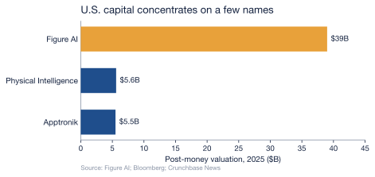

3 Capital & Investment Landscape
Chapter 2 ended on a question the bill of materials cannot answer: a humanoid costs tens of thousands of dollars to build before it earns a cent, so who fronts that money — and on what terms — decides who gets to build at all. Here the two strategies of Chapter 1 stop being philosophies of engineering and become philosophies of finance. The United States funds its robots the way it funds software: private capital, concentrated into a few presumed winners at valuations that assume a platform. China funds its robots the way it funds infrastructure: state-directed capital, spread across an entire industry on a horizon no venture fund could tolerate. The machines may converge; the money behind them could not be more different.
3.1 The American model: private capital, betting on platforms
American humanoid robotics is financed by the deepest private-capital market on earth, and it behaves accordingly. Venture funding into robotics startups surged to a multiyear high in 2025, and the single largest humanoid rounds on record were American (Crunchbase News, 2025). What is striking is not the aggregate but its concentration. Figure AI, which has yet to sell a robot at scale, closed a Series C above $1 billion in September 2025 at a $39 billion post-money valuation (Figure AI, 2025). Physical Intelligence, a startup building robot foundation models, was valued at $5.6 billion in November 2025 after a $600 million round, more than doubling from $2.4 billion a year earlier, with Jeff Bezos, the OpenAI Startup Fund, Thrive Capital, and Lux Capital among its backers (Bloomberg, 2025). Apptronik, maker of the Apollo humanoid, pushed its Series A past $935 million at roughly a $5.5 billion valuation, drawing in B Capital and Google (Crunchbase News, 2026).
These are software valuations attached to hardware companies, and they reveal the logic of the bet. Private capital is not trying to fund an industry; it is trying to own the platform that wins it, the way earlier funds tried to own the search engine or the social network. The money arrives fast and in enormous concentrations — from venture syndicates and from the balance sheets and venture arms of NVIDIA, Microsoft, OpenAI, and Google — but it arrives expecting an exit, on the seven-to-ten-year clock of a fund’s life. It rewards the company that looks most like the eventual monopolist and starves the rest. The strength of the model is its speed and its appetite for moonshots; its weakness is that it concentrates the nation’s bet on a few names and demands they pay off before the fund closes.
3.2 The Chinese model: state-directed capital, betting on an industry
China’s capital arrives from the opposite direction — top-down, patient, and diffuse. At its apex sits the national venture-capital guidance fund the National Development and Reform Commission announced in 2025: about ¥1 trillion ($138 billion), deployed as market-based equity over a twenty-year horizon, with each regional sub-fund expected to exceed ¥50 billion (International Federation of Robotics, 2025). Beneath it runs a second national vehicle, an $8.2 billion AI Industry Investment Fund launched in January 2025 to steer capital into frontier technologies including embodied AI (Jamestown Foundation, 2025). And beneath that lies a dense lattice of local money: dedicated robotics or humanoid funds of roughly ¥10 billion each stood up by Beijing, Shanghai’s Pudong district, and Shenzhen, with local governments committing more than ¥70 billion to humanoid robotics in total (TMTPost, 2025), alongside provincial subsidies that reach up to ¥100 million per approved project in Guangdong and ¥200 million for research institutions in Suzhou (Jamestown Foundation, 2025).
This is what Chinese policy literature calls a “whole-of-nation” effort, and its private market reflects it: financing into China’s humanoid sector exceeded ¥10 billion (about $1.4 billion) in the first half of 2025 alone, a record, much of it state-linked rather than purely private (Jamestown Foundation, 2025). The strength of the model is patience and breadth — capital that can wait twenty years and seed a whole supply chain rather than a single champion. Its weakness is the mirror image: state money flowing to a crowded field invites duplication and misallocation, dozens of near-identical firms chasing the same subsidies, and a reckoning when priorities shift. Where American capital risks betting too narrowly, Chinese capital risks betting too widely.
3.3 Two ledgers, one race
| Dimension | United States | China |
|---|---|---|
| Capital source | Private VC + tech-giant balance sheets | State guidance funds + local government |
| Emblematic vehicle | Figure AI: $39B private valuation (Figure AI, 2025) | NDRC: ¥1T (~$138B) 20-year fund (International Federation of Robotics, 2025) |
| Logic of the bet | Own the winning platform | Build the whole industry |
| Time horizon | A fund’s life (~7–10 years), exit-driven | Up to 20 years, strategy-driven |
| Characteristic failure | Over-concentration in a few names | Over-subsidized, crowded field |
Note: the two emblematic vehicles are not the same unit — one firm’s private valuation versus a national fund — but each is the clearest signature of how capital is raised on its side, exactly as in Chapter 1’s strategic comparison.
The asymmetry that matters most is not the size of the two pools but their patience. American capital must be returned; the fund that backed Figure at $39 billion needs an exit, which means the robot has to become a profitable product on a venture timeline. Chinese state capital carries no such clock — it can absorb a decade of losses if the result is a domestic industry that no longer depends on foreign suppliers. That difference will reappear, transformed, when this report reaches the hidden cost: a financing model that demands quick returns has every incentive to externalize the long-tail costs of repair, obsolescence, and disposal onto someone else — and, as later chapters will show, a state racing for industrial dominance externalizes them no less freely, onto its own soil and rivers. Neither model has yet priced what the machine leaves behind. Capital can build the machines and price their parts; whether the machines can stay built — whether they survive contact with the physical world long enough to repay anyone — is the question the next chapter opens.